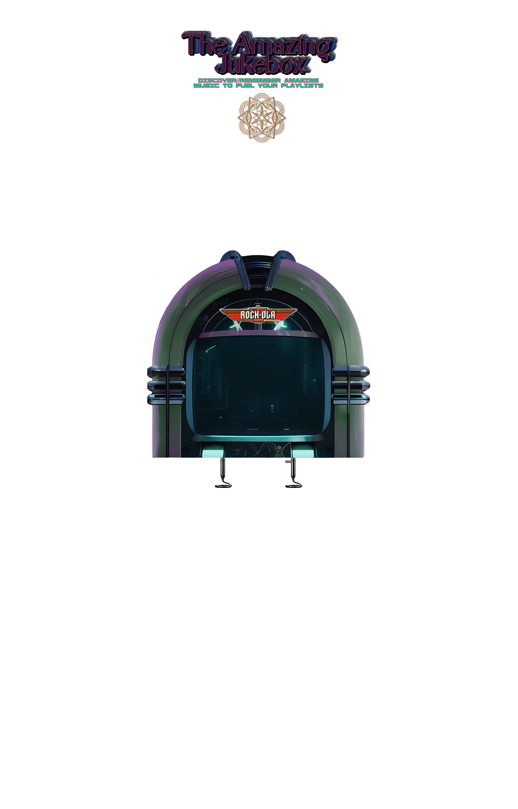

About Us
The Amazing Jukebox is your gateway to discover special music gems 💎 in an interactive and immersive format! Whether you're on mobile or desktop, our digital jukebox's music encyclopedia is designed for all music lovers to explore, enjoy, and uncover unique tracks.
Join us and dive into the world of music online across any web browser!
📲🖥️🌎🔊🔊🎶🎶🎶
Contact
Feel free to share your experience, thoughts or even song submissions with us, we want to hear from you!
✉ theamazingjukebox.contact@gmail.com